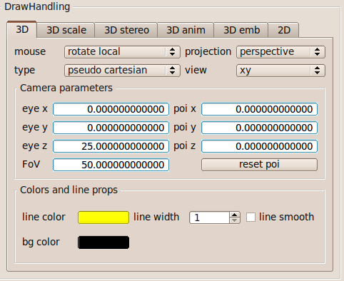
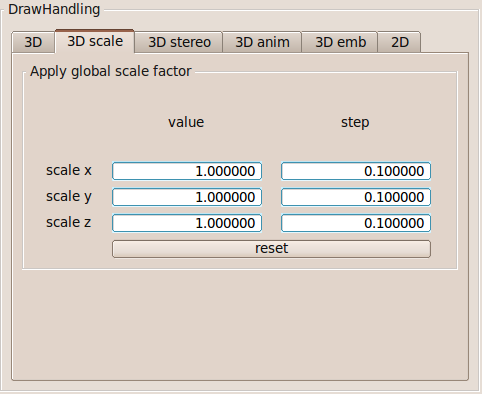
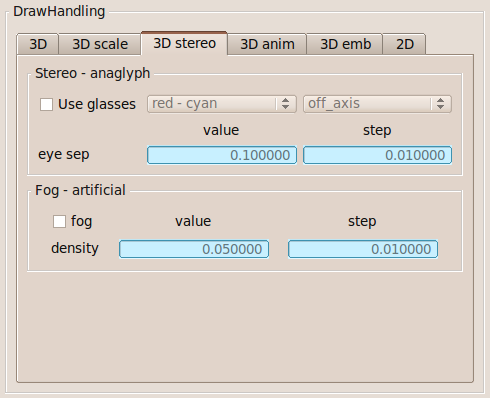
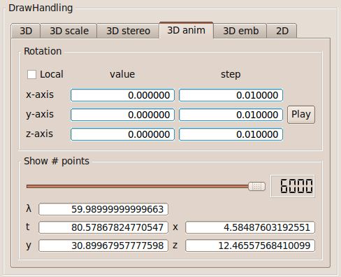
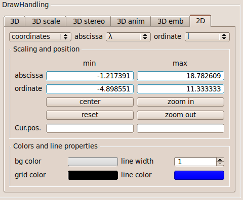

Draw view
The camera system, the projection, and the representation type can be choosen within the 3D tab.

Mouse navigation within the OpenGL 3D representation.- The projection can either be perspective or orthogonal.
- By default, the type of representation is in pseudo cartesian coordinates. But you can also choose the embedding diagram or effective potential representation, if the metric has implemented the corresponding transformations.
The camera has three standard views: xy, zx, yz, custom.
Camera parameters:
- The eye position can either be changed by mouse control or directly in the line edits. Use the mouse wheel to increase/decrease the values.
- The point of interest can either be changed by mouse control or directly in the line edits. Use the mouse wheel to increase/decrease the values.
Color and line width:
- To change the line color, press the colored button.
- To change the background color, press the colored button.
- The line width can be between 1 and 5.
- Choose line smooth for antialiasing.
The 3D visualization can be scaled in x-, y-, and z-direction.

To enhance the three-dimensional view, you can add an artifical fog. If you have anaglyph glasses, you can enable the Stereo - anaglyph view.

Stereo - anaglyph
- Using stereo glasses might enhance the three dimensional view.
- Choose the color-filter-combination depending on your stereo glasses.
- The eye separation is given in pseudo cartesian coordinate units.
Fog - artificial
- An artificial fog might enhance the three dimensional impression.

Rotation
- Rotate around axes defined by the local tetrad or by the coordinate axes.
- Start and stop animation by toggling the 'Play' button.
Show # points:
- Change the number of points shown in the 3D visualization with the slider. The current point is given in metric coordinates. λ represents the affine parameter of the geodesic.
If an embedding diagram is defined for the current metric, the available embedding parameters can be changed. Change the color of the embedding diagram using the colored button.


- 2D visualization can either be in pseudo-cartesian coordinates or as mutual-coordinate-relation diagram.
- For the mutual-coordinate-relation diagram select coordinates for abscissa and ordinate.
Scaling
- The plotting range for the 2D visualization is defined by minimal and maximal abscissa and ordinate values.
- Cur.pos. represents the current cursor position.
Colors and line properties
- 'bg color' changes the background color.
- 'grid color' changes the grid color.
- 'line color' changes the line color.